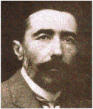

Art as Prophesy
Heart of Darkness
 |
Joseph Conrad |
According to Joseph Conrad, Heart Of Darkness was an "histoire farouche d'un journalist qui devient chef de station à l'intérieur et se fait adorer par une tribu de sauvages." [a wild story about a journalist who became a chief of station in the interior and made himself adored by a tribe of savages]. On this showing Kurtz, its subject, could have been the rogue trader-explorer-journalist Henry Stanley. There are also obvious parallels with the buccaneering exploits of the White Rajahs of Sarawak, and with Charles-Marie David de Mayréna and his brief reign as the 'King of the Sedang.' But in his book King Leopold's Ghost, about the brutal enslavement of millions of Congolese Africans by Belgium, Adam Hochschild reports that Conrad probably knew of, and may even have crossed paths with, a Captain Léon Rom, one of Leopold's most notorious officers. Like Kurtz, Rom wrote for publication, painted, dabbled in science, and decorated his fence palings with the heads of African tribesmen. Heart of Darkness is a brooding meditation on the 'sinister impulses that lurk in noble intentions.' More than this, it is Conrad's dark prophesy of fascism in modern Europe.
The story ends where it begins, on the cruising yawl Nellie, in the Thames estuary, with 'a mournful gloom brooding motionless over' London:
The Director of Companies was our captain and our host. We four affectionately watched his back as he stood in the bows looking to seaward. On the whole river there was nothing that looked half so nautical. He resembled a pilot, which to a seaman is trustworthiness personified. It was difficult to realize his work was not out there in the luminous estuary, but behind him, within the brooding gloom.
London ('the monstrous town' and the 'cruel devourer of the world's light') like the inner station, is associated with a darkness and the upper reaches of a river (the Thames), a topographic mirror image of the scene Marlow, the narrator, has left in the Congo. What is Conrad telling us? Traditional interpretations of Heart Of Darkness have focused on the moral deprivation of Kurtz, but Conrad was making a precise political statement. As a counterpoise to the darkness over 'the biggest and greatest town on earth,' there is the trustworthy pilot and the luminous space of the open sea, a 'serenity of still and exquisite brilliance.' The contrast of this 'benign immensity of the sky' with the ominous Dickensian gloom hanging over London is quite deliberate, as is Marlow's remark that 'All Europe contributed to the making of Kurtz.' Heart Of Darkness appears to be about 'a journalist who…made himself adored by a tribe of savages,' but it is really about Europe.
An eyewitness to Belgian atrocities in the Congo, the casual enslavement and extermination of millions of defenseless Africans by a 'civilized' European power bent on the acquisition of colonial spoils, Conrad had looked unblinking into the future and seen apocalypse in the form of the modern terror state: a Europe ruled by hollow men like Kurtz, narcissistic demagogues intoxicated with utopian dreams, who would co-opt violent nationalistic movements, just as Kurtz had co-opted the militant lake tribes, and forge them into nightmare police states. It is an astonishing prophecy. The complacent and optimistic Victorian middle-class was certain God had chosen its halcyon age as a serene terminus of history. But beneath the quiet eddies of Victorian gentility, Conrad, the watchful pilot, had perceived danger; his artists's imagnination reached into the future and foresaw the rise of militaristic police states ruled by charismatic maniacs like Hitler, Mussolini, Stalin and Tojo, that would plunder, enslave and exterminate the world's weaker races and nations.